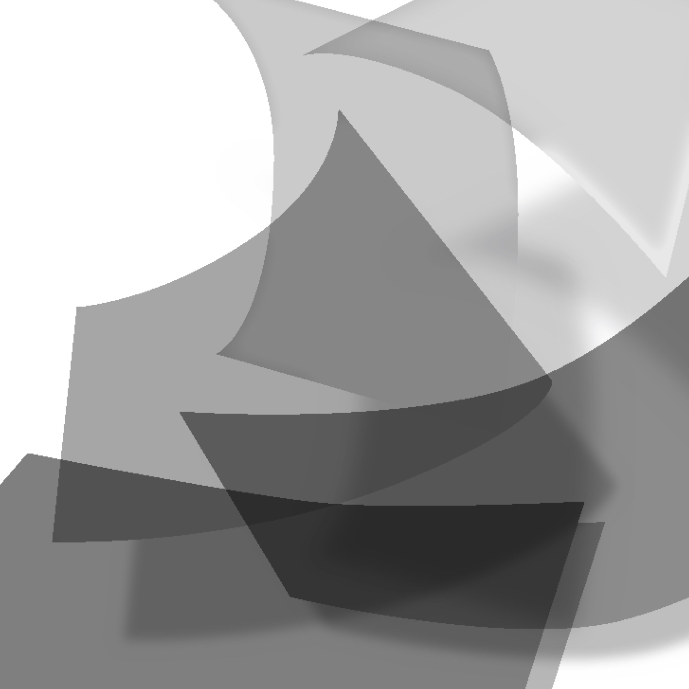
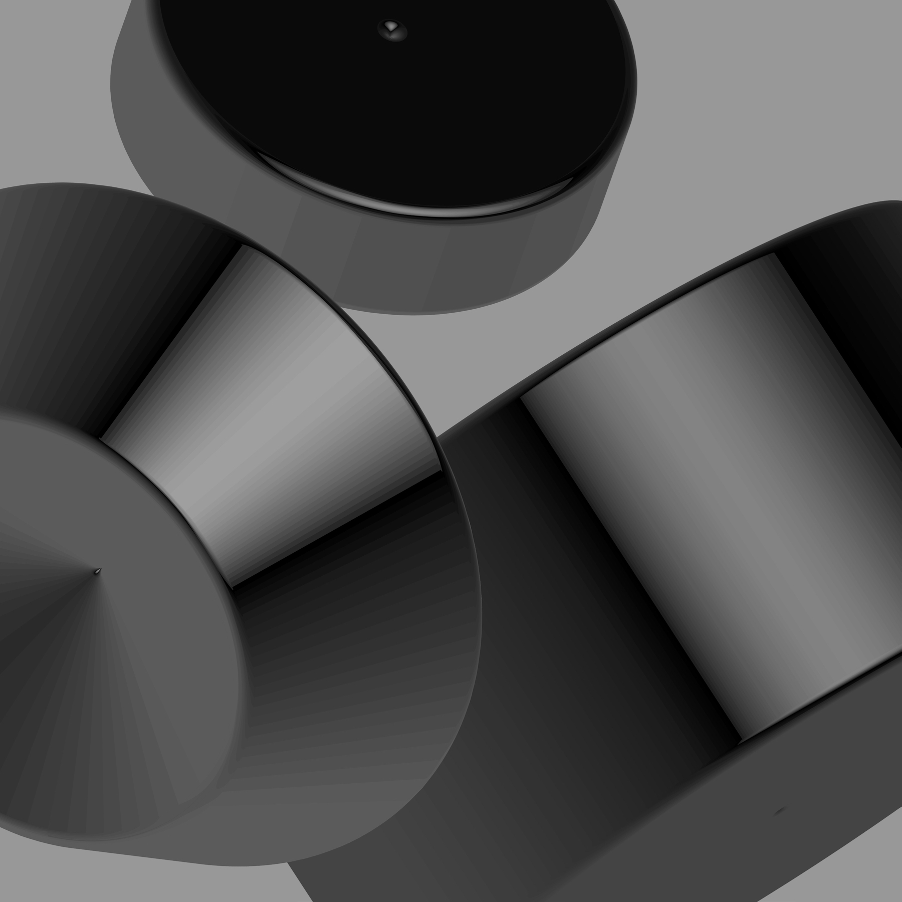
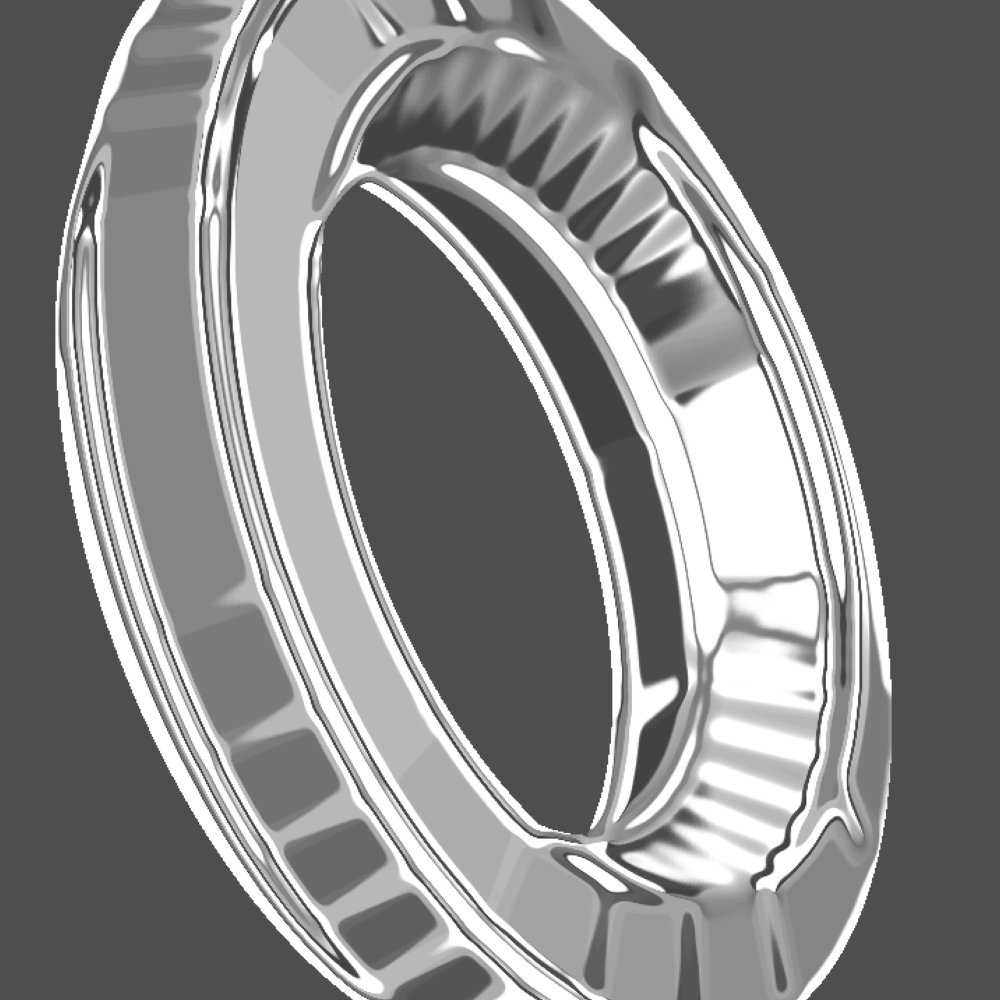
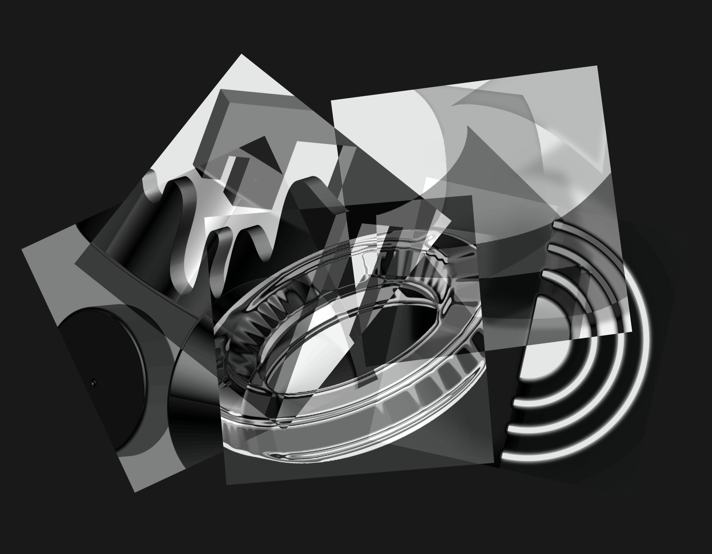
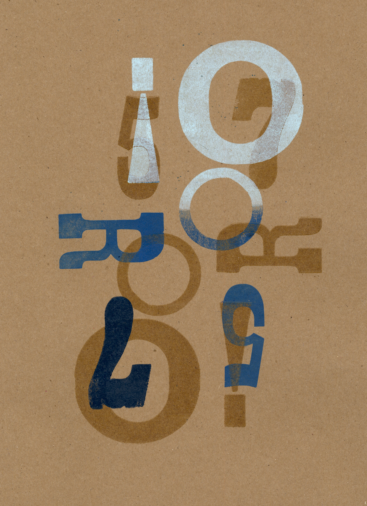
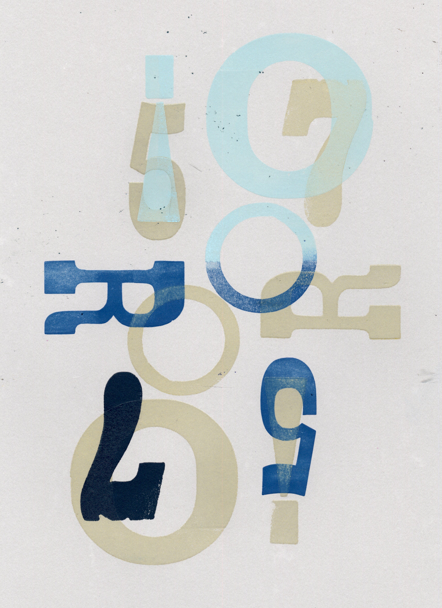
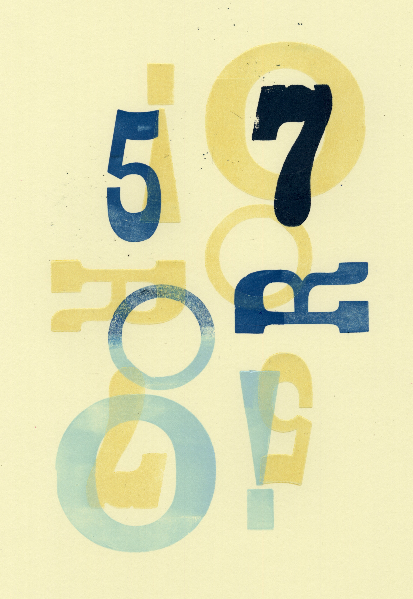
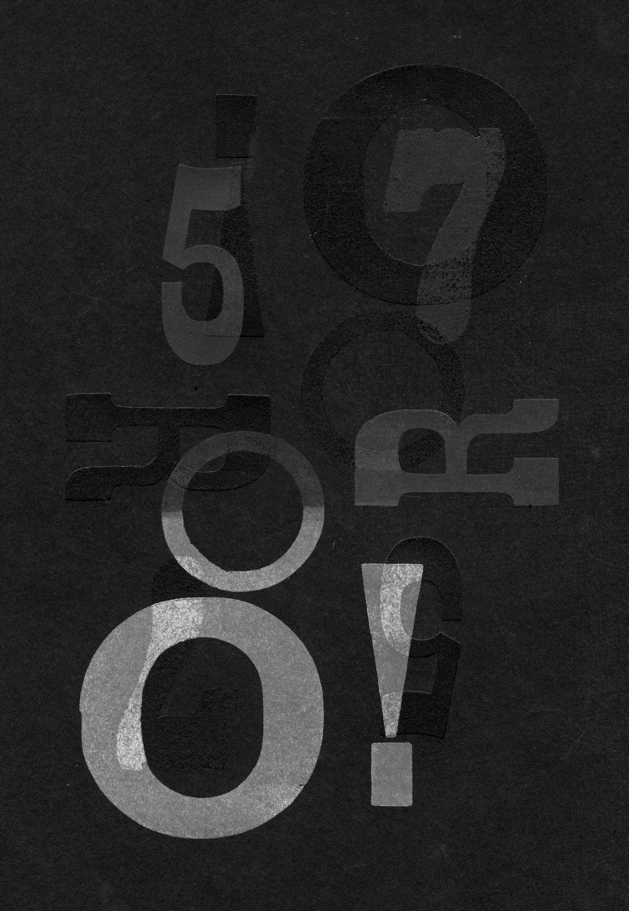
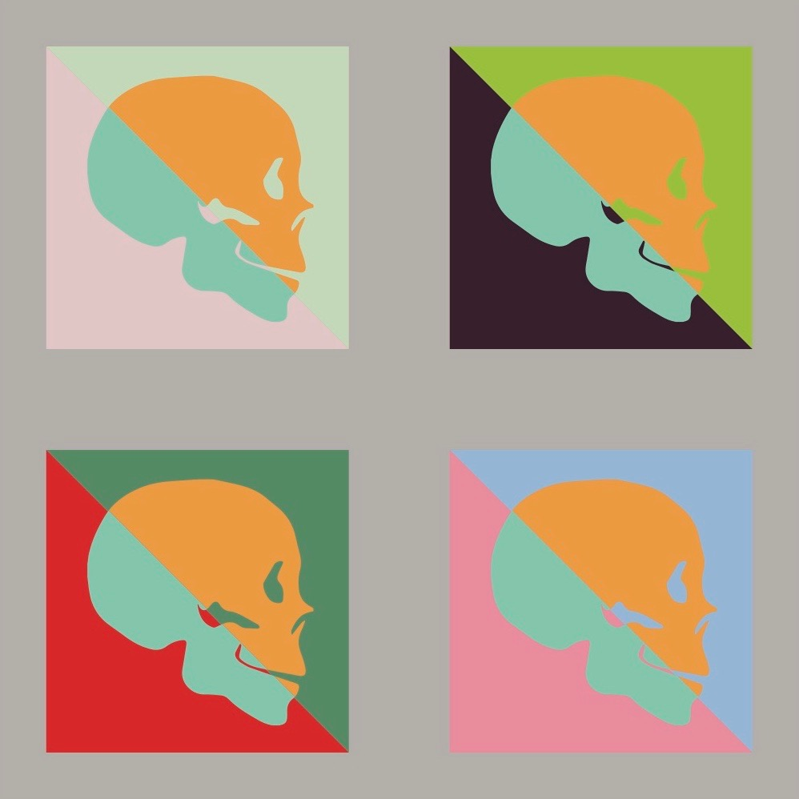

Standard-Dystopian
Examples of Standard-Dystopian Design
Five Compositions: Designs that are not for the sake of convenience or message delivery




Letterpress: Traditional medium used for outdated or antique visuals




Color Study: Intentionally color-coordinated
for unease to the eye

Sequence Photography: Standard method used to photograph a depressing or dark scene in sequence